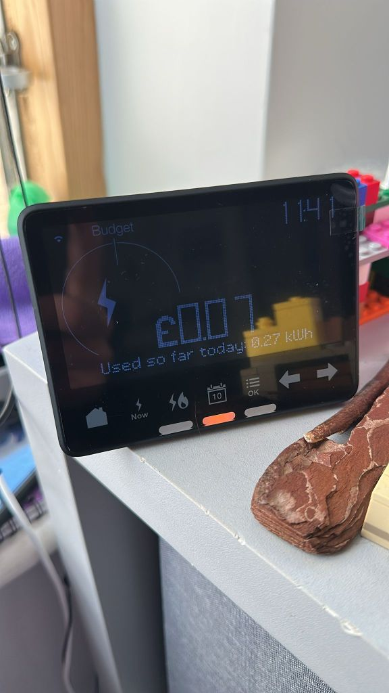

Powering Down: Is £2 a Day for Electricity Too High for Your Household?

A daily cost of £2 per person for electricity is relatively high for a typical UK household. Let's explore this in more detail.
The average annual electricity consumption for a medium-sized home in the UK is about 2,900 kWh[9]. For a household of 2-3 people, this translates to approximately £943 per year or £78.58 per month for electricity[9].
If we consider a household of three people, each spending £2 per day on electricity, the monthly cost would be about £180 (£2 x 3 people x 30 days). This is significantly higher than the average monthly electricity cost for a medium-sized home.
Why is £2 per person per day considered high?
-
Comparison to average usage: The average daily electricity cost for a medium-sized UK home is around £2.58 (£943 per year / 365 days)[9]. For a household of three, this would be about £0.86 per person per day, less than half of the £2 figure.
-
Energy efficiency implications: A daily cost of £2 per person might indicate inefficient energy use or the presence of energy-intensive appliances. Modern, energy-efficient homes and appliances typically consume less electricity[3].
-
Household size considerations: Larger households generally have lower per-person energy costs due to shared usage of appliances and lighting[7]. A £2 per person daily cost might be more typical for single-person households or very small families.
Factors that could lead to high electricity costs
-
Inefficient appliances: Older or less energy-efficient appliances can significantly increase electricity consumption[3].
-
Home insulation: Poor insulation can lead to higher energy use for heating and cooling[3].
-
Usage patterns: Frequent use of high-consumption devices or leaving appliances on standby can increase electricity bills[3].
-
Home size and type: Larger homes or those with electric heating systems tend to have higher electricity costs[5].
-
Regional variations: Electricity costs can vary by region, with some areas having higher rates than others[11].
Ways to reduce electricity costs
-
Upgrade to energy-efficient appliances: This can significantly reduce electricity consumption[3].
-
Improve home insulation: Better insulation can reduce the need for heating and cooling[3].
-
Change usage habits: Be mindful of when and how you use electricity-consuming devices[3].
-
Consider smart meters: These can help you monitor and manage your electricity usage more effectively[5].
-
Compare energy providers: Switching to a more competitive tariff could help reduce costs[9].
In conclusion, a daily electricity cost of £2 per person is indeed high for a typical UK household. By implementing energy-saving measures and being more conscious of electricity usage, most households should be able to significantly reduce this cost, bringing it more in line with the national average.
Citations:
[1] https://www.uswitch.com/gas-electricity/guides/average-gas-and-electricity-bills-in-the-uk/
[2] https://www.aquaswitch.co.uk/blog/average-electricity-usage/
[3] https://vtoman.com/blogs/news/insights-into-household-electricity-consumption
[4] https://www.moneyhelper.org.uk/en/blog/utilities/how-much-is-the-average-gas-and-electricity-bill-per-month
[5] https://www.ovoenergy.com/guides/energy-guides/how-much-electricity-does-a-home-use
[6] https://www.sust-it.net/energy-calculator.php
[7] https://www.mdpi.com/1996-1073/17/6/1392
[8] https://www.citizensadvice.org.uk/consumer/energy/energy-supply/save-energy-at-home/check-how-much-your-electrical-appliances-cost-to-use/
[9] https://www.nimblefins.co.uk/average-cost-gas-electricity-bill-uk-household
[10] https://assets.publishing.service.gov.uk/media/61449c45e90e07044435c9e7/efus-Household-Energy-Consumption-Affordability.pdf
[11] https://www.britishgas.co.uk/energy/guides/average-bill.html
[12] https://www.suffolkgazette.com/average-electricity-use-per-day-in-the-uk/
[13] https://www.confused.com/gas-electricity/guides/average-energy-bills-in-the-uk
Iteration consider the under floor heating and boilers
Ah, thank you for the additional context. Including heating in the equation changes the perspective significantly, especially with underfloor heating and boilers in the mix. Let's explore this further.
"Warm Floors, Cool Bills? £2 a Day for Energy Might Be a Hot Deal!"
When we factor in both electricity and heating costs, particularly for a home with underfloor heating and boilers, £2 per person per day starts to look more reasonable, and in some cases, might even be considered efficient. Here's why:
-
Underfloor Heating: This system is generally more energy-efficient than traditional radiators, but it can still consume significant energy, especially in larger spaces.
-
Boilers: Modern boilers are quite efficient, but they're still one of the biggest energy consumers in a home, especially during colder months.
-
Combined Costs: The average UK household spends about £1,138 per year on gas and £764 on electricity, totaling £1,902 annually or about £5.21 per day for the whole household.
-
Per Person Breakdown: In a household of three, £2 per person per day for all energy use (including heating) would amount to £6 per day or £2,190 per year, which is only slightly above the national average.
Considering your specific situation:
-
Underfloor heating can be more expensive to run initially but often leads to lower costs over time due to its efficiency.
-
The combination of underfloor heating and boilers suggests a well-heated home, which naturally requires more energy.
-
The £2 per person daily cost covers both electricity and heating, making it quite reasonable for a comfortable, well-heated home.
Is £2 a day sensible in this context?
Given your heating setup, £2 per person per day for all energy use (electricity and heating) does indeed make sense. It suggests that:
-
You're living in a comfortably heated home.
-
You're likely using energy-efficient systems (underfloor heating is generally efficient).
-
Your energy consumption, while slightly above average, is not excessive given the heating systems in place.
Tips to optimize your energy use:
-
Ensure your underfloor heating is properly programmed to avoid overheating.
-
Regularly maintain your boiler for optimal efficiency.
-
Consider smart thermostats to fine-tune your heating schedule.
-
Supplement with good insulation to retain heat effectively.
In conclusion, when accounting for both electricity and heating, especially with your specific setup of underfloor heating and boilers, £2 per person per day is a sensible figure. It reflects a well-heated, comfortable home without indicating excessive energy use. Keep monitoring your usage and implementing energy-saving measures where possible to maintain or even reduce this cost over time.
Imported from rifaterdemsahin.com · 2025